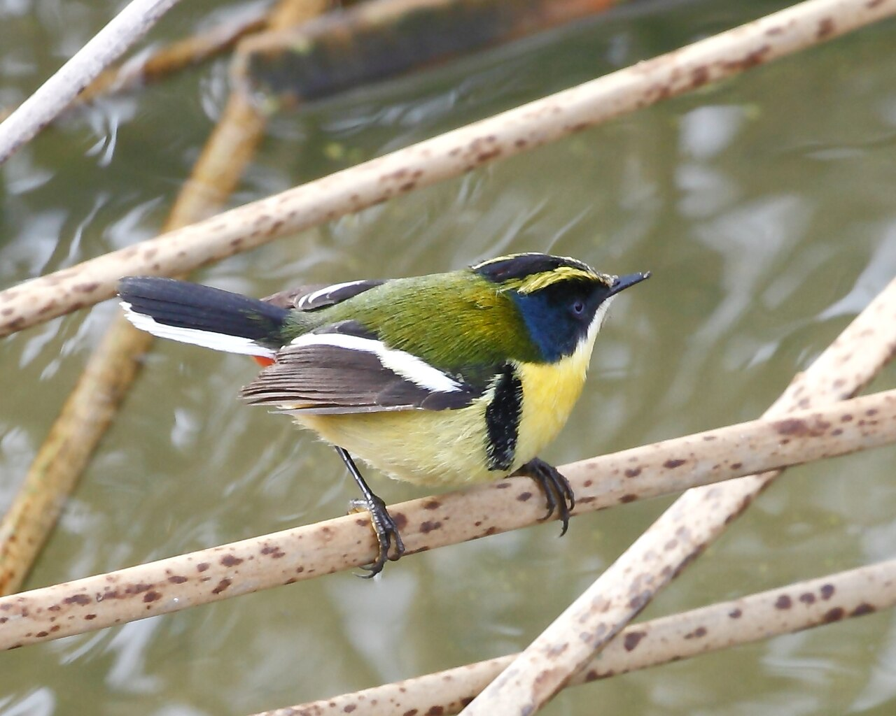

Lula.
diario de la mañana — el mundo, tu ciudad y lo que te asombra
Buen día, sábado. Empezó feo y mejora: tormentas de madrugada y chaparrones temprano —el grueso cayó entre las 5 y las 7—, y después despeja, con máxima de 27 o 28°. Hoy es la Noche de los Museos, de 19 a 2. Y es sábado de ballet: hoy te cuento Romeo y Julieta, que es la obra donde la coreografía dejó de ilustrar la música para discutir con ella.
- El mundo, en resumen2'
- Argentina y Buenos Aires2'
- Ciencia: decidir en 235 milisegundos3'
- Mirá a tu alrededor2'
- La palabra del día1'
- Le français du matin2'
- Sábado de ballet: Romeo y Julieta5'
- Lo que me asombra hoy1'
- Pasatiempo: sudoku difícil20'
- Cuaderno: repaso y quiz3'
Tres cosas, cortas
Estados Unidos se quedó sin aviones. Una falla en el sistema de control de tránsito aéreo —sobrecarga de datos y problemas de comunicaciones— paralizó el tráfico aéreo del país. Es el apagón aeronáutico más grande desde 2001. Por qué importa: el control aéreo norteamericano corre en buena parte sobre infraestructura vieja, y cada caída así reabre la discusión sobre cuánto cuesta no actualizar un sistema mientras funciona.
La COP31 discute quién está sentado en la mesa. En Antalya volvió el reclamo por la participación de los jóvenes en las cumbres climáticas: son los que van a vivir las consecuencias de lo que se decida y los que menos peso formal tienen en la negociación. Por qué importa: no es solo simbólico. Los compromisos que se firman ahora tienen horizonte 2035 y 2050.
Dia se va del país. La cadena española de supermercados vendió su filial argentina por 48,6 millones de euros y sale del mercado local. Por qué importa: es la tercera salida de una cadena internacional de consumo masivo en pocos años. El retail argentino se está volviendo un negocio de jugadores locales, por razones que tienen más que ver con los márgenes y la inflación que con las ventas.
Dos semanas de sesiones y tres temas grandes
Al Congreso le quedan dos semanas de sesiones ordinarias y el Gobierno quiere sacar tres cosas en ese plazo: el Presupuesto, la suspensión de las PASO y una reforma del Banco Central. Es una agenda ambiciosa para catorce días, y de las tres la del Presupuesto es la que más consecuencias prácticas tiene: sin ley, el Ejecutivo gobierna prorrogando el presupuesto anterior, que es lo que viene pasando y lo que le da enorme discrecionalidad para mover partidas.
Y en fútbol: la Selección perdió 2-1 con Uruguay en un amistoso, sin Messi en cancha.
Para hacer este fin de semana
- La Noche de los Museos, hoy de 19 a 2, gratis. Más de cien instituciones. El consejo de siempre: elegí tres cercanas entre sí y no intentes más.
- Última función de Manon en el Colón: es mañana domingo 15. El Ballet Estable con la Filarmónica en el foso.
- Si llueve a la mañana, el ciclo John Huston en la Sala Lugones sigue hasta el 4 de diciembre.
Un cuervo decide en 235 milisegundos
De qué estamos hablando: de cuánto tarda un cerebro en convertir una imagen ambigua en una decisión. El paradigma clásico para medirlo son los puntos en movimiento aleatorio: una nube de puntos donde una fracción se mueve coherentemente hacia un lado y el resto al azar, y el animal tiene que decir si el conjunto va a izquierda o a derecha. Se usa desde los años ochenta en primates y es la base de los modelos de acumulación de evidencia: la idea de que el cerebro suma pruebas hasta cruzar un umbral y ahí dispara la respuesta.
Qué encontraron
- Dos cornejas negras (Corvus corone) entrenadas en la tarea respondieron en promedio en 235 milisegundos: alrededor de la mitad de lo que tardan humanos y monos en la misma tarea.
- No pagaron el apuro con errores: con señal clara acertaban casi el 100 %, y con señal difícil seguían por encima del azar.
- Registraron neuronas del nidopalio caudolateral —una región del cerebro de las aves que cumple un papel comparable al de la corteza prefrontal en mamíferos, pero con una arquitectura completamente distinta: las aves no tienen corteza en capas—. A los 70 ms del estímulo esas neuronas ya discriminaban la dirección del movimiento.
Por qué es interesante y no solo simpático: el linaje de las aves y el nuestro se separaron hace unos 320 millones de años. Que un cerebro sin corteza laminada implemente el mismo algoritmo de decisión —acumular evidencia hasta un umbral— y encima lo corra más rápido, es un argumento fuerte de convergencia: la función no depende de la arquitectura concreta, sino de la lógica del problema. Los autores especulan que la presión evolutiva del vuelo premió la velocidad; el mecanismo exacto que lo permite todavía no se sabe.
«Ultrarapid decision-making in an avian brain». Schmidbauer y Nieder, Instituto de Neurobiología de la Universidad de Tubinga, Science, octubre de 2026. Los números vienen del comunicado de la universidad y de la cobertura; no vi las figuras.
El saúco, que está en flor, y el siete colores de laguna



El árbol: saúco
| Nombre científico | Sambucus (Adoxáceas). En Buenos Aires vas a ver sobre todo el europeo, S. nigra, y el nativo, S. australis. Es más arbusto grande que árbol, y aparece en bordes de quintas, fondos y baldíos. |
|---|---|
| Cómo reconocerlo | Hojas compuestas, con cinco o siete folíolos aserrados, y ahora las flores: platos blancos de flores diminutas, de hasta 20 cm de diámetro, perfumadas, que atraen una nube de insectos. Después vienen las bayas negras. |
| Lo asombroso | Es comestible y tóxico a la vez, según la parte y el tratamiento. Las flores se usan para jarabes e infusiones; las bayas maduras y cocidas, para dulces. Pero hojas, tallos, semillas y bayas verdes contienen glucósidos cianogénicos —sambunigrina— que liberan cianuro al romperse el tejido. El calor y la madurez bajan ese contenido, y por eso ninguna receta tradicional de saúco se come cruda. El tallo, además, tiene una médula blanca y blanda que se vacía fácil: con eso se hacían flautas desde la antigüedad, y de ahí viene el nombre Sambucus, por un instrumento griego. |
El ave: siete colores de laguna
| Nombre científico | Tachuris rubrigastra (Tachurídidos). Chiquito, de 11 cm. Verde arriba, amarillo abajo, con la cara negra, una ceja amarilla, una mancha azulada y el bajo vientre rojo. Parece pintado por alguien sin autocontrol. |
|---|---|
| Cómo reconocerlo | Vive dentro del juncal: se trepa a los tallos verticales, da saltitos y casi nunca sale a la vista. En la ciudad, el lugar es la Reserva Ecológica Costanera Sur, en los bordes de las lagunas. Primero se oye: un trino metálico, corto. |
| Lo asombroso | Es el único miembro de su familia: un linaje que quedó solo. Y está tan especializado en el junco que hace el nido colgado entre tres o cuatro tallos, tejido como una copa profunda, a pocos centímetros del agua. Toda su vida pasa en una franja vertical de un metro. |
balcón sustantivo
germánico balko (viga) → italiano balcone → castellano balcón · francés balcon · inglés balcony
La palabra no viene del latín: viene del germánico, de la misma raíz que «balca», viga. Un balcón era, originalmente, la punta de las vigas del piso que sobresalía del muro, y sobre la que después se puso un piso y una baranda. Primero fue un accidente constructivo, después una terraza chiquita, y recién al final un lugar donde pararse a mirar.
La escena del balcón de Romeo y Julieta —la de hoy— tiene un detalle gracioso: Shakespeare nunca escribió un balcón. En el texto original Julieta aparece «en una ventana» (at a window). El balcón lo agregó la tradición escénica del siglo XVIII, cuando los teatros empezaron a tener la arquitectura para hacerlo. Es decir: la imagen más famosa de la obra más famosa del teatro occidental es un invento de los escenógrafos.
Mon père, ma mère
— C'est ta famille ?
— Oui. Mon père, ma mère et ma petite sœur.
— Elle est mignonne !
| mon père / ma mère | mi papá / mi mamá [mon PER / ma MER] |
|---|---|
| ma petite sœur | mi hermanita [ma pe-TÍT SÖR] |
| c'est ta famille ? | ¿es tu familia? [se ta fa-MÍY] |
| elle est mignonne | es linda [el e mi-ÑÓN] |
Un truco
El posesivo francés concuerda con la cosa poseída, no con el dueño: mon père (masculino) y ma mère (femenino), aunque quien habla sea la misma persona. Nada que ver con el castellano, donde «mi» sirve para todo. Y una trampa: delante de palabra femenina que empieza con vocal se usa mon igual, por sonido: mon amie, no «ma amie».
Romeo y Julieta: el ballet que se atrevió a actuar
La música es de Serguéi Prokófiev y es de 1935, pero el ballet que hoy se baila en medio mundo es el de Kenneth MacMillan, estrenado en el Royal Opera House de Londres en 1965, con Margot Fonteyn y Rudolf Nuréyev en el estreno. Lo que MacMillan hizo fue sacarle al ballet narrativo el gesto convencional —esa pantomima de señalar el corazón y mirar al cielo— y reemplazarlo por algo más incómodo y más teatral: cuerpos que dudan, que se equivocan, que se chocan.
Qué mirar en una función
- La escena del balcón. El pas de deux es casi todo en carrera: Julieta no espera a que la levanten, se arroja. MacMillan le dio una urgencia física que en 1965 resultó escandalosa.
- Mercutio muriendo. Sigue bromeando mientras se muere, y la coreografía lo hace bailar cada vez peor, hasta que las piernas no responden. Es de las cosas más difíciles de bailar del repertorio: hay que bailar mal, con una técnica perfecta.
- Julieta sentada en la cama. Entre dos escenas, después de que Romeo se va y antes de ir a ver al fraile, Julieta se queda quieta en el borde de la cama durante unos treinta segundos de música enorme. No baila nada. Es el momento más famoso del ballet, y es una decisión de no bailar.
- La orquesta. Prokófiev escribió para esto una paleta rarísima: saxofón tenor, mandolinas, celesta, tubas. Si vas a una función, escuchá los graves.
El final que no fue
En el guion original de 1935, Prokófiev y sus colaboradores hicieron algo impensable: le pusieron final feliz. Julieta se despertaba a tiempo y los dos vivían. La explicación de los autores era medio brutal —«los muertos no pueden bailar»— y la censura soviética no la aceptó: se les ordenó corregir el guion y volver a Shakespeare. Esa partitura perdida apareció recién en 2003, cuando el musicólogo Simon Morrison la encontró en un archivo de Moscú, y en 2008 Mark Morris estrenó una versión con unos veinte minutos de música que nadie había oído nunca.
Prokófiev escribió dos finales. Durante setenta años se bailó el que le impusieron.
Y acá: en el Colón todavía está Manon, también de MacMillan, con última función mañana domingo. Si ya la viste, la de hoy se consigue completa en video: buscá la del Royal Ballet.
Prokófiev murió el mismo día que Stalin, y no quedaban flores
El 5 de marzo de 1953, Serguéi Prokófiev murió de una hemorragia cerebral en un departamento comunal de Moscú. Unas horas después murió Stalin. La coincidencia no fue solo una ironía biográfica: el país entero se detuvo para el funeral del dictador, y la muerte del compositor más importante de la Unión Soviética tardó varios días en siquiera anunciarse.
Las crónicas coinciden en el resultado y difieren en los detalles. Al velorio fueron unas treinta o cuarenta personas. No se consiguieron flores —habían ido todas al funeral de Stalin—, así que los relatos hablan de flores de papel, o de plantas en maceta que prestaron los vecinos. Tampoco había músicos disponibles: se puso una grabación de la marcha fúnebre de Romeo y Julieta.
Es difícil imaginar una imagen más exacta de lo que fue ese régimen para los artistas que le tocaron en suerte. Prokófiev había vuelto a la URSS en los años treinta convencido de que era su lugar, y pasó los últimos quince años escribiendo bajo sospecha, con su mujer presa en un campo. La música que sonó en su velorio, grabada, era la que había tenido que corregir por orden de un censor.
El del sábado
Repaso y quiz
Repaso de idiomas
Quiz
La tarea de los puntos en movimiento mide…
El nidopalio caudolateral de las aves…
Las bayas verdes y las hojas del saúco son tóxicas porque tienen…
El siete colores de laguna vive…
En el texto de Shakespeare, Julieta aparece…
El guion original del ballet de Prokófiev, en 1935…
Escritura
- Quiz: acumular evidencia hasta decidir · papel comparable con otra arquitectura · glucósidos cianogénicos · dentro del juncal · en una ventana · tenía final feliz.
- Repaso: j'ai un frère · ma mère · je suis fatiguée · bancarse un costo · quisquilloso o exigente · el punto donde se traba todo.
- Francés: por ejemplo, «Mon père s'appelle… Ma mère habite à Buenos Aires. J'ai une petite sœur.»
Sudoku:
Fuentes de esta edición
- Mundo y país: agenda de agencias del día · la tapa de Perfil
- Clima: Perfil, con datos del SMN · las alertas
- Ciencia: Universidad de Tubinga: el comunicado · la cobertura
- Ballet: la versión de MacMillan · Oxford University Press: el final feliz y el hallazgo de Morrison · WRTI: Prokófiev y Stalin · Teatro Colón
Mañana, domingo: edición lenta, la semana en seis titulares y repaso. — Lula.